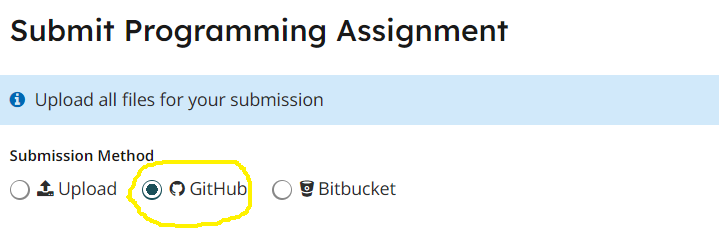

Homework 1
Last updated: Mon, 10 Feb 2025 15:49:09 -0500
Out: Tue Feb 04 2025, 11am EST
Due: Tue Feb 11 2025, 11am EST
Overview
In this homework, we will continue to practice programming in a "high-level" functional style, using Racket. We will also begin to add some important non-code components, which are essential for writing readable code.
Note: This assignment assumes you have completed Homework 0. You will not be able to complete this assignment until you have done Homework 0.
Since a big theme of this course is about using language to communicate effectively, hws will be graded on more than just correctness, beginning with this assignment. Specifically, this hw will be graded accordingly:
correctness (4 pts)
other requirements such as Signature, Examples, and Tests (see below for details) (7 pts)
style (see below for details) (4 pts)
README (1 pt)
Total: 16 points
Setup
Create a new repository for this assignment by going to the CS450 Spring 2025 GitHub Organization and clicking "New".
Note: The CS450 Spring 2025 GitHub Organization must be the owner of the repository. Do not create the repository in your own account.
On the "Create a new repository" screen:
Name the repository hw<X>-<LASTNAME>-<FIRSTNAME> where <X> is the current homework number.
For example, I would name my hw1 repository hw1-Chang-Stephen.
Mark the repository as Private.
Check "Add a README file".
Select the Racket template for the .gitignore.
Choose whatever you wish for the license.
When done click "Create repository".

Tasks
Read Chapters 1.4-1.7 and 2.1-2.4 of the Textbook and do the exercises below.
NOTE: The textbook will refer to "Student Languages" which we do not use in this course (and a "Stepper" that only works with the Student Languages). Instead, we use the full Racket language, which is invoked by putting #lang racket at the top of a file (see also Before Submitting).
For Examples and Tests, do not use check-expect from the Beginning Student Language (even though the textbook says to). Instead, use check-equal? from rackunit.
Examples for a function definition should be right after the define. Put your function code in a file named hw1.rkt.
All required defines should use the name specified in the exercise and should be provided.
Tests should be put into the test-suite in tests.rkt, as described in lecture and the hw1 starter code. Try to think about corner cases and code coverage.
DO NOT SKIP OR RUSH EXAMPLES AND TESTS! They will be worth the most points in this course!
Come up with two Data Definitions for angles, one for radians and one for degrees. Make sure that the data definitions include all the necessary components, as described in lecture.
- Using the above data definitions, write two functions rad->deg and deg->rad. Each should have
a Signature that, using existing Data Definitions, specifies the type of the inputs and outputs
(at least) one "Example", developed before the function code is written (and placed in the same file as the code), which is used to explain what the code "should" do.
Though Examples differ from Tests, the Examples should still be written as rackunit check-equal? tests, so that they can help confirm the correct behavior of the code.
(at least) two "Tests" that are created after the function code is written (placed in a separate tests.rkt file), which confirm more thoroughly that the code "actually" does what it "should" do.
They should also be written as rackunit check-equal? tests, so that they can help confirm the correct behavior of the code.
Using the 2htdp/image library, write a function called mk-I-block that creates a 2htdp/image rectangle image that (if unrotated) is four units wide and one unit tall, where one "unit" is 40 pixels. The rectangle should have "solid" fill and be "cyan" in color.
The function should take an input angle in radians and the output should be rotated counter-clockwise by that amount.
Be careful with using the right kind of data! You may find some previous functions from this hw helpful, and also the rotate function.
Make sure to create sufficient examples so that you understand what the code is supposed to do! To get proper clarification, Discussion Board posts may include any number of examples and what you think the expected output should be, e.g., "I think (mk-I-block pi) should evaluate to <some Image>. Is my understanding correct?".
As with above, the function should have a Signature, (at least) one Example, and (at least) two Tests. You can assume that the 2htdp/image library comes with an Image data definition whose instances will evaluate to true when given as input to the image? predicate.
Now create a similar function called mk-J-block, where the (unrotated) output image is a 1 by 2 unit rectangle appended to a 2 by 1 rectangle, aligned on their bottoms. The shape should have "solid" fill and be "blue" in color.
Like above, the function should take an angle in radians and the output should be rotated counter-clockwise by that amount. Be careful with using the right kind of data!
The function should also have a Signature, one Example, and two Tests. You can assume that the 2htdp/image library comes with an Image data definition whose instances will evaluate to true when given as input to the image? predicate.
Before Submitting
Testing (and Autograders)
Before submitting, note:
Do not submit until all code has been thoroughly tested (by you), which means writing a "sufficient" number of Test cases.
A GradeScope "Autograder" may or may not be released before the due date but either way, an Autograder is not a software development/testing tool, so do not use it as one. Code must be tested independent of any Autograder and questions about Autograders will be ignored (e.g., posts asking "why is the Autograder giving an error?" are not allowed)
If you do submit before the deadline and get an Autograder error, this is bonus information that indicates the submitted code is not complete and/or not correct. But it’s up to you to figure out what "correct" means and how to fix to the program.
Of course, the course staff is here and eager to help, but cannot do so without context information. The best way to supply this information is to INCLUDE EXAMPLES WITH ALL QUESTIONS, along with what the "expected" result should be! The posted examples should be the minimal amount of code needed to communicate the problem. This will receive the clearest possible answer.
The Autograder test suite is subject to change. This means that the visible grade seen during submission is not the final grade.
Style
All code should follow proper Racket Style.
Also, the repository itself must follow proper style. Specifically, it must have appropriate commit messages. See How to Write a Git Commit Message if you are unsure how to write a commit message.
Files
A submission must have the following files in the repository root:
hw1.rkt: Contains the hw solution code.
All defines should use the name specified in the exercise (ask if you are unsure) and should be provided.
The easiest (but not always the most readable) way to ensure all necessary definitions are provided is to (initially) put as the second line in the file:
This automatically provides all definitions in the file (the first line should be #lang racket).
tests.rkt: This file should require hw1.rkt and define tests for it.
Specifically, it should define a rackunit test-suite named TESTS which contains "sufficient" rackunit Test cases (e.g., check-equal?, etc.) for each defined function.
README.md: Contains the required README information, including the GitHub repo url.
Submitting
When you are done, submit your work to Gradescope hw1. You must use the "GitHub" Submission Method and select your hw<X>-<LASTNAME>-<FIRSTNAME> repository.

Note that this is the only acceptable way to submit homework in this course. (Do not manually upload files and do not email files to the course staff. Homework submitted via any unapproved methods will not be graded.)